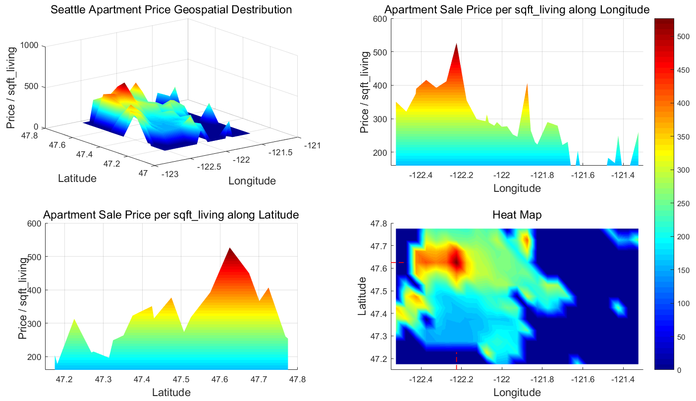
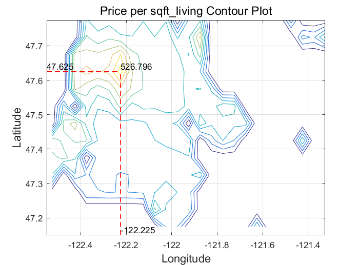

Why Longitude and Latitude are not working in a linear regression model?


Some Comments
An apartment's price is, empirically speaking from the geospatial point of view, inversely proportional to its squared distance from the centroid of the clusters. One can imagine the Centroids of the clusters as a central business district like Wall Street or a University like Columbia University.
My argument, which needs to be proved, is that a mixture of Bivariate Gaussians can be used to model how the location of the apartment is affecting its price.
A group of atmospheric dispersion models can be seen as practical examples of Gaussian Mixtures (or its variant).
And one can intuitively guess that the price of the house has similar spatial distribution as that of the pollution. Both quantities are largely affected by how far they are from the centers (of the central business districts / sources of pollution)
A Map View of Above Average Apartment Prices in Seattle